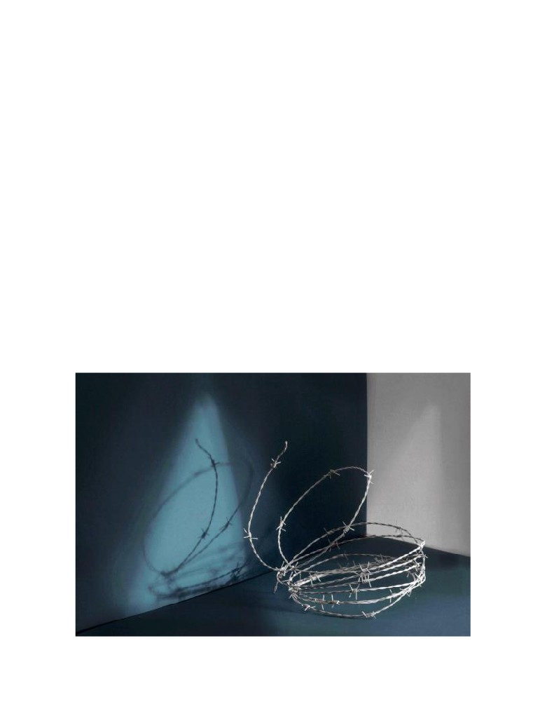

A choreographed conversation
Sabrina Castillo Gallusser
In 2012, Guatemalan philosopher, Amílcar Dávila, and myself maintained a series of conversations
around the choreographic process. These conversations were inspired by our own questions and
our conjunct reading of Martin Heidegger’s famous essay “The origin of the work of art”. Back
then, I was also very much interested in the usage of the word listening in the somatic and dance
spheres. Amílcar and I established an email dialogue that lasted many months and through which
we were able to reflect and play with different ideas concerning the creative process. An earlier
version of this conversation was published in Castillo Gallusser, S. y Dávila, A. (2012). Pensamiento
danzante [Dancing thought]. Abrapalabra: Arte actual: Creación y contexto, 45, 9-47.
Sabrina. July 14, 2012
I would like to take the paragraph that you wrote on March 6, and play/find other senses in it,
something like choreographing a Theme and variations with your text. It seems to me that if I vary
/re-vary it, we could attract new comprehensions around the ideas that we have talked about. I
will omit different words from the original text in each one of the three variations, until we end up
with a minimum of words in the last one. From our conversations, I have also condensed some
lines which I consider give possible answers to what is asked in your first paragraph. I will
elaborate a small text to play/vary with in the same way that I described above. It seems to me
that, with this, we may be able to smell/discover/touch new angles in our conversations.
1

A choreographed conversation:
Making space for spatiality. Liberate the
Theme and variations
openness and establish it in its structure.
Smell magnetic tensions. Be visceral, logical,
and a witness to moving constellations. Be
How do you understand this world which
body inside and body outside. Hope that it
goes one way and see it go another. Listen to
Heidegger talks about? I understand it as a
sphere, a horizon, a space of sense and
clarify, to describe and to keep that world
alive and to let oneself obey its force. Blood
meaningfulness, a matrix that shelters and
generates that which we understand as
and flesh. To advance, to retreat, to mobilize,
relations among elements, but only after an
to stabilize. To be confused. To be able to
see and not to see through the openness. To
analysis, which by definition breaks down or
takes apart parts that are not parts before
breath. To discover, to listen, to touch. To
reunite pieces that seem to need each other
they have been that which they truly were:
integral elements of a whole or composition
or that could be reunited. To relate them in
time and space. Probably to generate
—about which, by the way, one may ask who
has integrated it, heard it, and composed it?
variations so that they can be listened to or
to let them have a voice or a rebound.
Does one discover, evidence, compose,
Maybe we carry those pieces in the body
recompose, vary, build, create, find, invent,
alter, provoke, evoke, or convoke the world
that we later put together and then we
discover. Like listening to something
and oneself, before having been what
oneself (and the world) truly was?
unknown, with the viscera.
Photograph: Ana Werren
2
Making space for spatiality. Liberate
:::::
::::::::::::::::::::::::::::::::::::::::::::::: its structure.
Smell
::::::::::::::::::::::::: Be visceral
::::::::::
:::::::::::::::::::::::::::::::::::::::::::::::::::::::::::::: Be
:::::::::::::::::::::::::::::::::::::::: this world which
:::::::: inside ::::::::::::::::::::::::::::: Hope that it
:::::::::::::::: talks
::::::::?
:::::::::::::::::::::::::::::::
goes one way ::::::::::::::::::::::::::::::::: Listen to
sphere,
::::::::::::::::::: space of sense
::::::
::::::::::::::::::::::::::::::::::::::::: keep that world
::::::::::::::::::::::::::::::::::::::: that shelters
:::::
alive
::::::::::::::::::::::::::::::::::::::::::::::::::::::::::::
::::::::::::::::::::::::::::::::::::::::::::::::::::::::::::::::::::
::::: flesh. To advance :::::::::::::::::::::::::::::::::::
relations among elements ::::::::::::::::::::::::::::
to stabilize. ::::::::::::::::::::::::: To be able to
::::::::::::::::::::::::::::::::::::::::::: breaks down
:::
see :::::::::::::::::::::::::::::::::::::::::::::::::::::::: To
::::::::::::::::::::::::::::::::::::::::::::::::::::::::::::::::::::
breath. :::::::::::::::::::::::::::::::::: to touch. To
::::::::::::::::::::::::::::::::::::::::::::::::::::::::::::::::::::
reunite pieces that ::::::::::::: need :::::::::::::::::
::::::::::::::::::::::::::::::: a
::::::::::::: composition
:::::::::::::::::::: be reunited. To relate them in
::::::::::::::::::::::::::::::::::::::::::::::::::::::::::::: who
time
::::::::::::::::::::::::::::::::::::::::
generate
has ::::::::::::::::::: heard it ::::::::::::::::::::::::::?
variations so that they can ::::::::::::::::::::::::::
Does one
:::::::::::::: evidence
::::::::::::::::
:::::::::::::::::::: have a voice
:::::::::::::::::::::::
recompose, vary ::::::::: create ::::::::::::::::::::
::::::::::: we carry those pieces
:::::::::::::::::::
::::::::::::::::::::::::::::::::::::::::::::::::::::::::::::::::::::
that we
::::::: put together and
::::::: we
::::::::::::::::::::::: before ::::::::::::::::::::::::::::::::::
discover. ::::::::::::::::::::::::::::::::::::::::::::::::::::::
::::::::::::::::::::::::::::::::::::::::::::::::::?
::::::::::::::::::::::::::::::::::::::::
Photograph: Ana Werren
3
Making space
:::::::::::::::::::::: Liberate
:::::
:::::::::::::::::::::::::::::::::::::::::::::::: its structure.
Smell ::::::::::::::::::::::::::::: Be ::::::::::::: logical
:::::::::::::::::::::::::::::::::::::::::::::::::::::::::::::::: Be
:::::::::::::::::::::::::::::::::::::
this world
:::::::
::::::::::::::::::::::::::::::::: outside
::::::::::::::::::::
::::::::::::::: talks
::::::::?
:::::::::::::::::::::::::::::::
::::::::::::::::::::::::::: see it go another. Listen :::
:::::::::::::: horizon
:::::::::::::::: sense
:::::
clarify
::::::::::::::::::::::::::::::::::::::: that world
:::::::::::::::::::::::::::::::::::
that
:::::::::::::::::
::::::::::::::::::: let oneself obey its force. Blood
generates :::::::::::::::::::::::::::::::::::::::::::::::::::::
:::::::::::::::::::::::::::::::::: to retreat, to mobilize
::::::::::::::::::::::::::::::::::::::::::::::::::::::::::::::::::::
:::::::::::::::::::::::::::::::::::::::::::::::::::::::::::::::::::::
::::::::::::::::::::::::::::::::::::::::::::::::::::::::::::::::::::
::::::::::: not to see
:::::::::::::::::::::::::::::::::::::
takes apart
:::::::::::::::::::::::::::::::::::::::::::::::
breath :::::::::::::::::::::::::: listen ::::::::::::::::::::::
::::::::::::::::::::::::::::::::::::::::::::::::::::::::::::::::::::
reunite pieces ::::::::::::::::::::::::::::::::::::::::::::::
::::::::::::::::::::::::::::: a whole
::::::::::::::::::::::
:::::::::::::::::::::::::::::::::::::::::::::::::::::::::::::::::::::
::::::::::::::::::::::::::::::::::::::::::::::::::::::::::::::::::::
:::::::::::::::::::::::::::::::::::::::::::::::::::::::::::::::::::::
:::::::::::::::::::::::::: heard
::::::::::::::::::::::::::::?
:::::::::::::::::::::::::::::::::::::::::::::::::::::::::::::::::::::
Does one discover
::::::::::::::::::::::::::::::::
to let them
:::::::::::::::::::::::::::::: rebound.
::::::::::::::::::::::::::::::::::::::::::::::: find, invent.
Maybe we carry ::::::::::::::::::: in the body
:::::::::::::::::::::::::::::::::::::::::::::::::::::::::::::::::::
::::: we
::::::: put together
::::::::::::: we
::::::::::::::::::::::::::::::::::::::::::::::::::::::::::: what
discover
:::::::
listening to something
:::::::::::::::::::::::::::::::::::::::::::::::::?
unknown :::::::::::::::::::::::::
4
Photograph: Ana Werren

Making ::::::::::::::::: spatiality
::::::::::::::::::::::
::::::::::::::::::::::::::::::::::::::::::::::::::::::::::::::::::::
Smell :::::::::::::::::::::::::::::::::::::::::::::::::::::::::::
::::::::::::::::::::::::::::::::::::::::::::::::::::::::::::::::::::
:::::::::::::::::::::::::::::::::::::::: this world
:::::::::
::::::::::::::::::::::::::::::::::::::::::::::::::::::::::::::::::::
::::::::::::::::::::::::::::::::::::::::::::::::::::::::::::::::::::
::::::::::::::::::::::::::::::::::::::::::::::::::::::: Listen :::
::::::::::::::::::::::::::::::::::::::::::::::::::::::::::::::::::::
::::::::::::::::::::::::::::::::::::::::::::::::::::::::::::::::::::
::::::::::::::::::::::::::::::::::::::::::::::::::::::::::::::::::::
::::::::::::::::::::::::::::::::::::::::::::::::::::::::::::::::::::
::::::::::::::::::::::::::::::::::::::::::::::::::::::::::::::::::::
::::::::::::::::::::::::::::::::::::::::::::::::::::::::::::::::::::
::::::::::::::::::::::::::::::::::::::::::::::::::::::::::::::::::::
::::::::::::::::::::::::::::::::::::::::::::::::::::::::::::::::::::
::::::::::::::::::::::::::::::::::::::::::::::::::::::::::::::::::::
:::::::::::::::::::::::::::: through the openness. To
::::::::::::::::::::::::::::::::::::::::::::::::::::::::::::::::::::
breath :::::::::::::::::::::::::::::::::::::: to touch. To
::::::::::::::::::::::::::::::::::::::::::::::::::::::::::::::::::::
reunite :::::::::::::::::::::::::: to need :::::::::::::::::
::::::::::::::::::::::::::::::::::::::::::::::::::::::::::::::::::::
::::::::::::::::::::::::::::::::::::::::::::::::::::::::::::::::::::
::::::::::::::::::::::::::::::::::::::::::::::::::::::::::::::::::::
::::::::::::::::::::::::::::: Probably
::::::::::::::::::::
:::::::::::::::::::::::::: heard
:::::::::::::::::::::::::::::::
:::::::::::::::::::::::::::::::::::::::::::::::::::::::::::::: to ::
::::::::::::::::::::::::::::::::::::::::::::::::::::::::::::::::::::
::::::::::::::::::: have a voice
:::::::::::::::::::::::
::::::::::::::::::::::::::::::::::::::::::::::::::::::::::::::::::::
Maybe
:::::::::::::::::::::::::::::::::::::::::::::::::::::::
::::::::::::::::::::::::::::::::::::::::::::::::::::::::::::::::::::
:::::::::::::::::::::::::::::::::::::::::::::::::::::::::::::: we
::::::::::::::::::::: before having been what
discover
::::::::::::::::::::::::::::::::::::::::::::::::::::::
oneself (and the world) truly was?
:::::::::::::::::::::: the viscera.
5